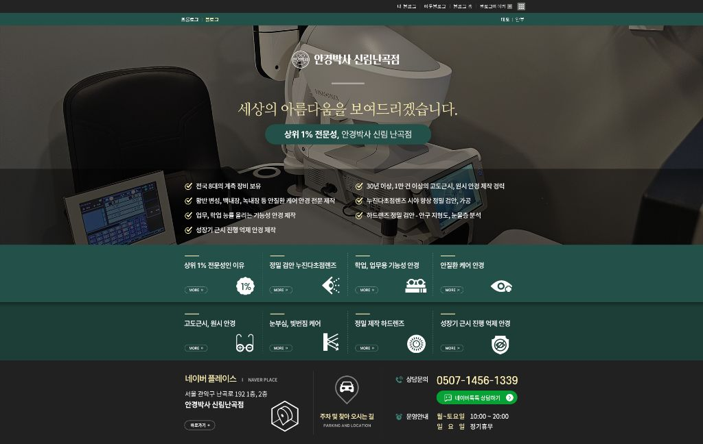
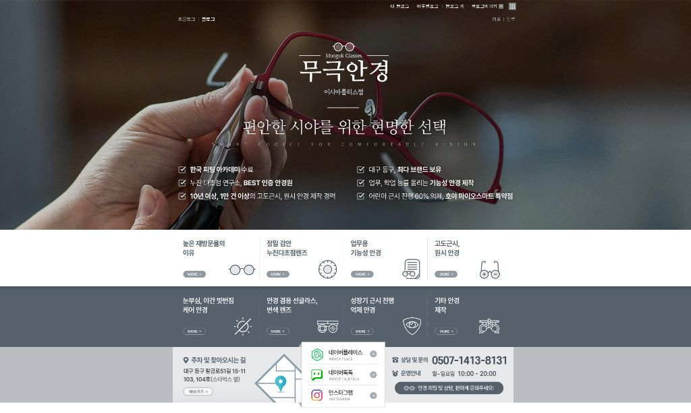
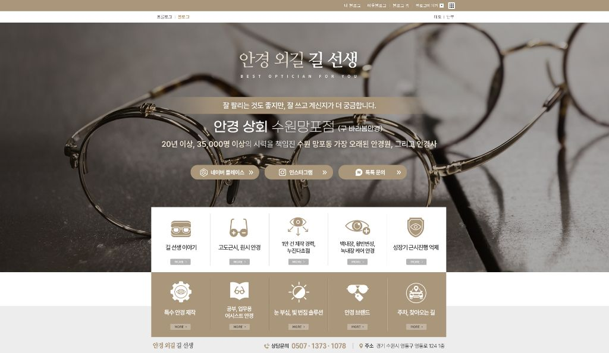
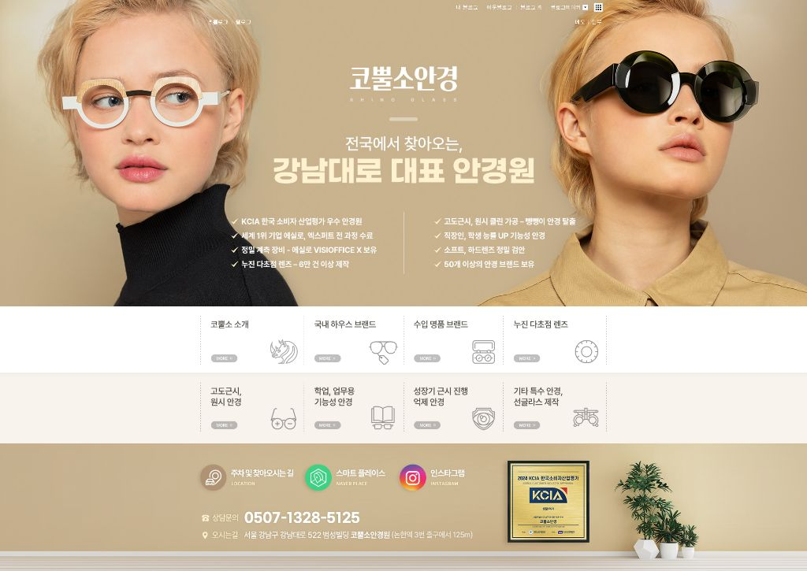
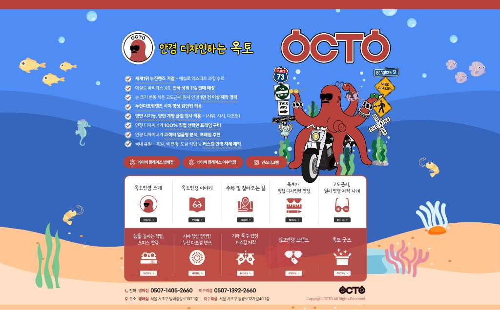

홈페이지형 블로그
첫 화면에 담는,
우리 안경원의 인상.
블로그에 들어온 고객이 안경원의 특징과 필요한 정보를 쉽게 찾도록 만듭니다. 소개 문장부터 화면 구성, 전화와 카카오톡 연결까지 함께 설계합니다.
홈페이지형 블로그 상담하기

홈페이지형 블로그 제작 사례
안경원마다,
다른 첫인상.
실제로 만든 화면을 살펴보세요.
이미지를 누르면 크게 볼 수 있습니다.










각 안경원의 소개와 콘텐츠를 한곳에.
홈페이지형 블로그 알아보기함께 살펴볼 업무
어떤 일을
하나요.
진행할 범위와 일정은
안경원의 상황에 맞춰 협의합니다.
첫 화면 카피
안경원이 다루는 품목과 설명하고 싶은 강점을 짧고 명확한 문장으로 정리합니다. 방문자가 어떤 안경원인지 먼저 이해하도록 정보의 순서를 정합니다.
메뉴와 이동 동선
소개, 제작 사례, 위치 등 블로그 안의 정보를 나눠 배치합니다. 원하는 글을 읽은 뒤 문의할 수 있도록 메뉴와 연결 버튼을 구성합니다.
블로그 화면 디자인
안경원의 분위기와 콘텐츠에 맞춰 첫 화면을 디자인합니다. 제목과 사진, 여백의 크기를 조절해 핵심 정보가 눈에 들어오도록 만듭니다.
채널 연결과 운영 안내
전화, 카카오톡, SNS 등 사용하는 채널을 연결합니다. 제작 후에는 블로그를 운영하는 데 필요한 가이드를 전달합니다.
보이는 첫인상과,
읽어가는 순서를 함께.
소개와 메뉴, 콘텐츠와 문의. 화면의 각 요소가 다음 정보를 자연스럽게 안내하도록 구성합니다.
- 소개 문장
- 메뉴와 콘텐츠
- 문의 연결
진행 과정
이렇게
함께 만듭니다.
필요한 자료를 확인하고,
검토할 내용을 함께 공유합니다.
상담과 기획
안경원의 강점과 첫 화면에서 전달할 정보를 정리합니다.
문장 작성
소개 문구와 메뉴, 문의 버튼에 들어갈 카피를 작성합니다.
디자인 시안
정보의 배치와 이미지, 글자 크기를 화면으로 구성합니다.
제작과 연결
블로그에 디자인을 적용하고 전화와 외부 채널을 연결합니다.
납품과 운영 안내
완성된 블로그와 함께 운영 가이드를 전달합니다.
자주 묻는 내용
시작하기
전에.
별도의 홈페이지를 만드는 서비스인가요?
네이버 블로그의 첫 화면을 홈페이지처럼 구성하는 서비스입니다. 별도 웹사이트 제작은 홈페이지 제작 서비스에서 안내합니다.
전화나 카카오톡 문의도 연결할 수 있나요?
전화 연결과 카카오톡, SNS 등 외부 채널 연결을 함께 구성합니다. 실제 사용하는 채널을 기준으로 연결 구성을 정합니다.
블로그 글 발행도 함께 포함되나요?
첫 화면 제작과 정기적인 글 발행은 서로 다른 업무입니다. 글 운영이 필요하다면 브랜드 블로그 대행을 함께 문의해 주세요.
홈페이지형 블로그에 관해 더 궁금한 내용이 있나요?
이 서비스 문의하기